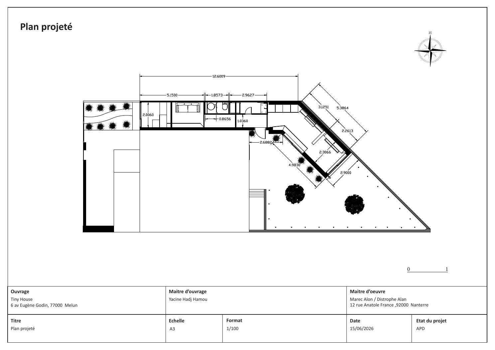
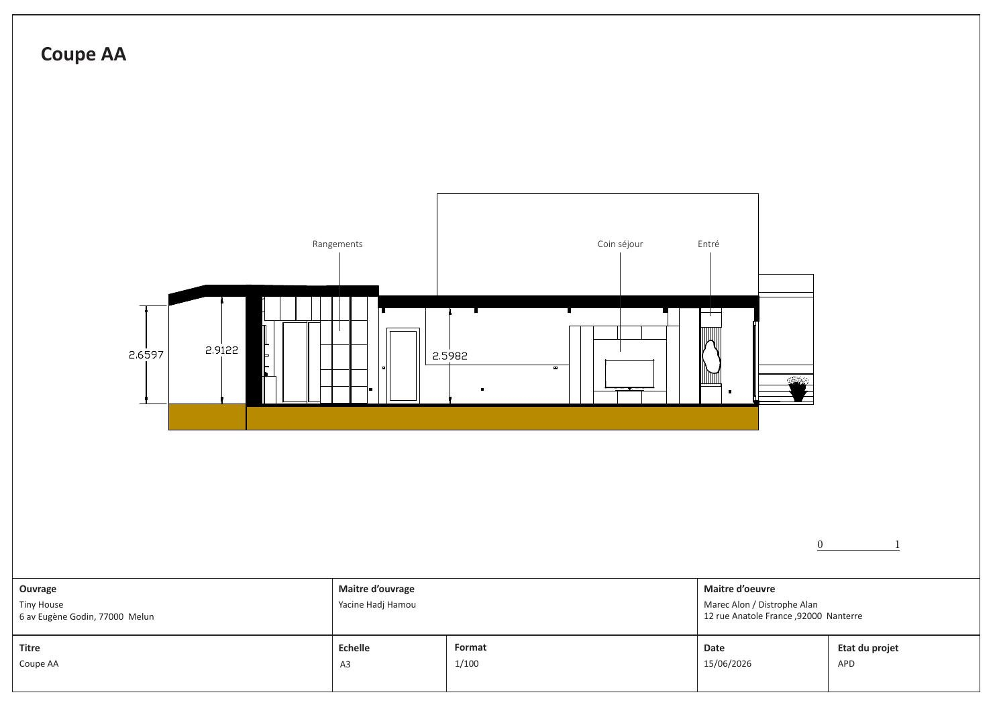
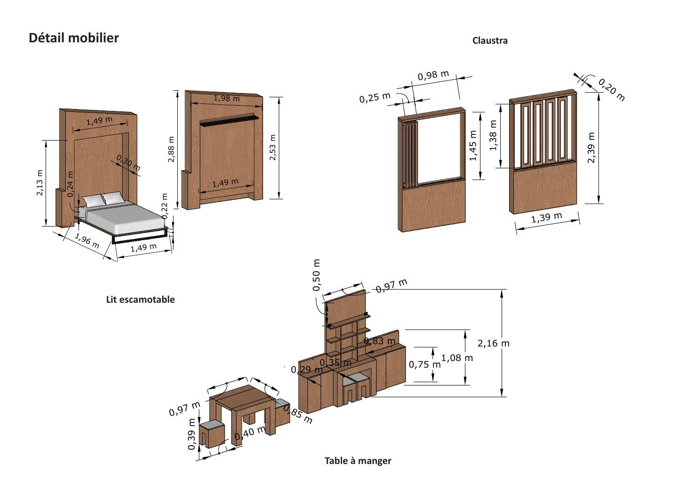
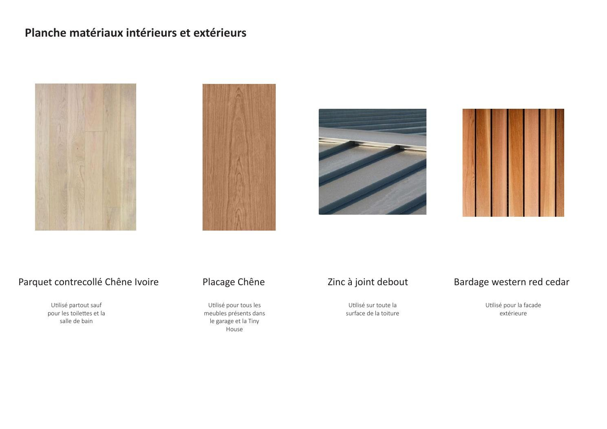
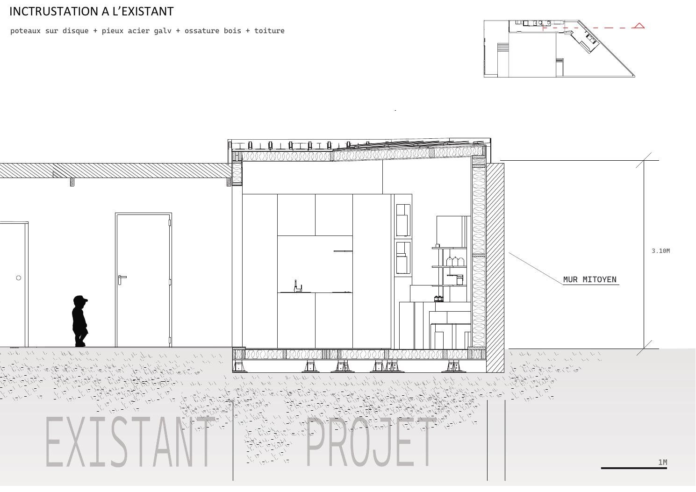
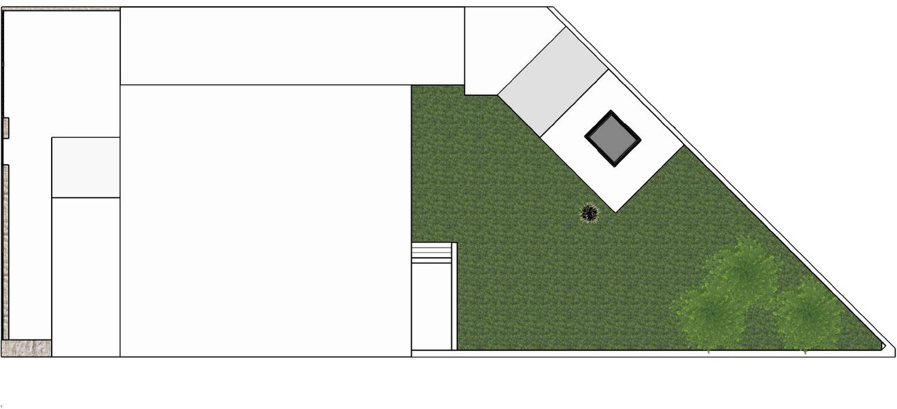

Tiny House
Transformer un garage inutilisé en tiny house Airbnb : un espace compact, sur mesure et ouvert sur le jardin.
La démarche
Faire beaucoup avec peu de mètres carrés
Un garage inutilisé au fond d'une parcelle, un petit jardin privatif de 30 m², et l'envie d'en faire une location Airbnb pour les couples. Sur une surface aussi réduite, chaque centimètre doit servir : j'ai abordé le projet comme un meuble à l'échelle d'une maison.
Contexte
Un garage existant à Melun, sur une parcelle calme mais enclavée, sans accès direct depuis la rue et avec du vis-à-vis.
La demande
Une expérience Airbnb atypique pour les couples, en continuité garage / jardin / tiny house.
Contraintes
PLU (zone U), emprise au sol limitée, accès chantier étroit, raccordement aux réseaux complexe, budget de 50 à 70 k€.
Intention
Une micro-architecture légère et réversible, grande ouverte sur le jardin, qui valorise un espace délaissé.
Choix d'aménagement
Organisation verticale, meubles toute hauteur, lit escamotable, table qui se rabat dans un meuble, claustra à panneaux pour séparer nuit et repas.
Matériaux
Parquet chêne ivoire, placage chêne pour tout le mobilier, bardage en red cedar et toiture en zinc à joint debout.
Transformation
Avant / Après
Le projet part d'un couloir existant marqué par un mur en pierre, des poutres apparentes et une circulation très linéaire. L'objectif était de conserver le caractère du lieu tout en apportant plus de chaleur, de fonctionnalité et de cohérence.
Entrée Couloir & banquette
à ajouter
Circulation Couloir & cuisine intégrée
à ajouter

Le travail s'est concentré sur l'intégration d'éléments sur mesure : habillages bois, banquette, rangements, niches décoratives et cuisine discrètement intégrée. Ces éléments permettent de transformer un simple passage en espace habité, pratique et chaleureux.
La palette claire et naturelle, associée au bois, vient adoucir l'existant tout en gardant l'esprit compact et fonctionnel de la tiny house.
Visualisations 3D
Vivre dans 36 m²


Extraits du dossier APD
Plans, coupes & détails
Un dossier de 31 planches : analyse du site, plans, coupes, détails techniques (structure, isolation, toiture), plans de réseaux et estimation chiffrée (DQE). Cliquez pour agrandir.






Livrables
Ce qui a été produit
Analyse
Note d'intention, brief, contraintes, références, SWOT et tableau des surfaces.
Plans
Plan de masse, plan projeté, coupes AA à DD, façade jardin.
Technique
Détails structure, toiture et isolation, plans électricité, eau et évacuation, DQE.
Représentation
Détails de mobilier sur mesure, planche matériaux et rendus photoréalistes.
Nature du projet Projet d'école (dossier APD) réalisé en binôme. Les vues « après » sont des rendus 3D.